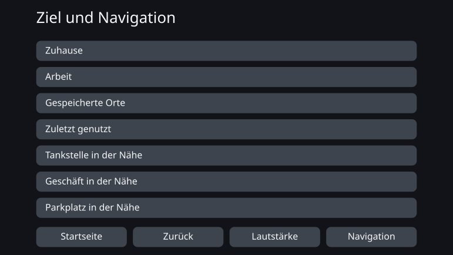
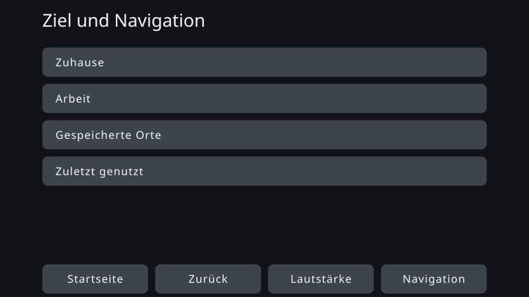

Personal Fit UI - Individuelle UI-Optimierung durch constraint-basiertes Design
August 2026
Überblick
Alle benutzen dieselbe Oberfläche auf dieselbe Weise. Diese Arbeit verlässt diese Voraussetzung der Massenproduktion und fragt, ob sich eine Oberfläche stattdessen so erzeugen lässt, dass sie zu den kognitiven, sensorischen und körperlichen Merkmalen eines einzelnen Menschen passt.
Angestrebt war keine Oberfläche, die sich während der Nutzung fortwährend an die Situation anpasst. Es geht um einen Mechanismus, der die Merkmale eines Menschen zu Beginn der Nutzung erfasst und daraus im Voraus eine passende Oberfläche erzeugt — innerhalb der Vorgaben, die Sicherheit und Barrierefreiheit setzen.
Dabei habe ich einen Ansatz erprobt, den ich constraint-basiertes Design nenne. Der Mensch entwirft anhand von Literatur und Normen die Richtungen, in die verändert werden darf, und die Grenzen, die dabei gelten. Innerhalb dieses Rahmens legt die KI die konkreten Werte und Formulierungen fest, und das Erzeugte wird daraufhin geprüft, ob es den Rahmen verletzt.
Im Proof of Concept diente ein Navigationssystem im Auto als Gegenstand; für dreizehn Personas mit unterschiedlichen Merkmalen wurde je eine Oberfläche erzeugt. Sichtbar veränderte sich dabei fast nichts. Der Ertrag entstand an anderer Stelle: Beim Aufschreiben der Constraints in prüfbarer Form zeigte sich, wo Spielraum für Individualisierung bleibt und wo die Constraints ihn aufzehren.
Was es heißt, allen dieselbe Oberfläche zu geben
Die meisten Produkte sind heute auf Massenproduktion hin entworfen: eine Oberfläche, die möglichst viele Menschen abdeckt. Selbst wo sich Schriftgröße oder die Zahl der angezeigten Einträge ändern lässt, müssen die Nutzenden den für sie passenden Zustand selbst finden und einstellen.
Für sehr viele Menschen funktioniert das. Aber „für viele passend“ und „für alle passend“ ist nicht dasselbe. Auch ein Produkt, das alle gemeinsamen Entwurfsstandards erfüllt, lässt Menschen zurück, denen diese Oberfläche schwerfällt.
Dieselbe Struktur zeigt sich darin, wie Fahrzeugoberflächen geprüft werden. Das Abnahmeverfahren der US-Behörde NHTSA für Blickabwendungen während der Fahrt verlangt nicht, dass alle Probanden das Kriterium erfüllen. Eine Aufgabe gilt als bestanden, wenn 21 von 24 Probanden es einhalten — dass ein Teil es nicht erfüllt, ist also von vornherein einkalkuliert. Eine Eingabe von Herstellern an die Behörde geht noch weiter: Danach schaut etwa einer von sechs Menschen über mehrere Aufgaben hinweg durchgängig länger weg. Diese Eingabe stammt von den regulierten Herstellern selbst und zielte auf eine Lockerung des Kriteriums. Der hier vorgeschlagene Weg will das Kriterium nicht lockern, sondern durch Individualisierung mehr Menschen in die Lage versetzen, es zu erfüllen.
Der Sinn einer individualisierten Oberfläche liegt nicht darin, allen einen neuartigen Bildschirm zu geben. Er liegt darin, die Menschen, die eine einheitliche Oberfläche bisher verloren hat, in den Bereich zu holen, in dem sie das Gerät benutzen und sicher bedienen können.
Bislang waren die Kosten dafür, für einen einzelnen Menschen eine eigene Oberfläche zu entwerfen, nicht realistisch. Seit sich KI als Teil des Entwurfsprozesses einsetzen lässt, beginnt sich diese Voraussetzung zu ändern.
Das Navigationssystem als Gegenstand
Gegenstand dieser Arbeit ist nicht das Navigationssystem, sondern die individualisierte Oberfläche. Das Navigationssystem wurde als ein Beispiel gewählt, an dem sich deren Möglichkeiten und Grenzen prüfen lassen.
Eine Fahrzeugoberfläche unterliegt harten Vorgaben: wenig Bildschirmfläche, sehr kurze Blickzeiten, Sicherheit bei jeder Bedienung. Vor der Auslieferung wird sie als einheitliche Oberfläche geprüft, die möglichst viele bedienen können — und dieselbe Oberfläche erhalten dann auch die Menschen, denen dieser Entwurf nicht entspricht.
Wenn Individualisierung in einem derart eng begrenzten Feld trägt, lässt sich der Gedanke des constraint-basierten Designs konkret prüfen. Ebenso gut kann es sein, dass die Vorgaben der KI kaum Freiheit lassen. Der Gegenstand macht beides beobachtbar.
In Japan sind 2026 sowohl Modelle mit Over-the-Air-Updates als auch herkömmliche, ab Werk verbaute Navigationsgeräte ohne Update-Möglichkeit unterwegs. Und selbst wo sich die Kartendaten aktualisieren lassen, wird die Grundstruktur der Oberfläche nach dem Kauf nicht zwangsläufig immer wieder neu entworfen. Dieser Proof of Concept geht von einem System aus, dessen Oberfläche nach Nutzungsbeginn nicht häufig aktualisiert wird.
Individualisierung zu etwas machen, das sich erzeugen lässt
Constraint-basiertes Design heißt: den Rahmen klar festlegen und die KI sich darin flexibel und mit Gespür für Nuancen bewegen lassen. Anders als bei einem parametrischen Verfahren, das Werte aus einer festgelegten Tabelle zieht, wird hier der Lösungsraum selbst entworfen, den die KI durchsuchen darf.
Wissenschaftliche Erkenntnisse liefern nicht immer konkrete Zahlen. Manchmal geben sie nur eine Richtung an: größer machen, weniger zeigen. Wo ein Wert feststeht, wird er als Regel berechnet; wo nur die Richtung bekannt ist, legt die KI das Konkrete innerhalb des Erlaubten fest. Diese Unterscheidung nicht verschwimmen zu lassen, gehört selbst zum Mechanismus.
Kognitive Dimensionen festlegen
Als Achsen dienen nicht Diagnosen, sondern Merkmale, die für die Bedienbarkeit relevant sind: Arbeitsgedächtnis, Widerstandsfähigkeit gegen Ablenkung, Seh- und Hörvermögen, Fingerfertigkeit.
Zuordnungstabelle
Verbindet die Merkmale der Nutzenden mit den Parametern der Oberfläche, die sich bewegen sollen: welches Merkmal was in welche Richtung verschiebt — mit Begründung.
Erkenntnisse und Normen
Sicherheitskriterien, Normen zur Barrierefreiheit, Befunde der Kognitionswissenschaft und allgemeine Gestaltungsprinzipien werden zusammengetragen.
Constraints
Bedingungen, die jedes Erzeugnis einhalten muss. Nicht als Leitbild, sondern so formuliert, dass sich prüfen lässt: erfüllt oder verletzt.
Designraum
Alles, was die Oberfläche variieren kann: Schriftgröße, Berührflächen, Zahl der angezeigten Einträge, Informationshierarchie, Hinweise, Wortwahl, Reihenfolge, Gruppierung. Die Zuordnungstabelle gibt die Richtung vor, die Constraints entfernen die unzulässigen Lösungen.
Die KI konkretisiert innerhalb des Rahmens
Aus der verbleibenden Freiheit legt sie Werte, Wortwahl, Reihenfolge und Gruppierung fest. Eine getrennte Prüfung bestätigt die Passung zum Rahmen; ausgegeben wird nur eine individualisierte Oberfläche, die alle Bedingungen erfüllt.
Proof of Concept — eine Oberfläche für dreizehn Personas
Für den Proof of Concept wurden dreizehn Personas mit unterschiedlichen Merkmalskombinationen angelegt. Sie bilden keine reale Verteilung von Nutzenden ab, sondern sind Gitterpunkte zur Prüfung: Die Merkmale wurden bewusst so gesetzt, dass sich erkennen lässt, welches von ihnen die Oberfläche verändert.
Für jede Persona wurde die gemeinsame, einheitliche Oberfläche als Before und die aus ihren Merkmalen erzeugte Oberfläche als After gegenübergestellt.
Ein Fall, in dem sich kaum etwas änderte
PS-01 — Referenz (mittleres Alter, typisch)
Diese Persona liegt in allen kognitiven, sensorischen und körperlichen Merkmalen im typischen Bereich. Nach der Individualisierung ist die Schrift etwas größer, doch die Zahl der angezeigten Einträge, die Anordnung und die Größe der Berührflächen bleiben nahezu unverändert.
Einheitliche Oberfläche (before)
Individualisierte Oberfläche (after)

Ein Fall mit sichtbarer Veränderung
PS-12 — mittleres Alter, geringe Fingerfertigkeit (sensorisch und kognitiv typisch)
Diese Persona stimmt in Alter, sensorischen und kognitiven Merkmalen mit PS-01 überein; nur die Fingerfertigkeit ist gering. Im After werden die Berührflächen größer, und die Zahl der Einträge auf einem Bildschirm sinkt von sieben auf vier. Die übrigen wandern auf den nächsten Bildschirm — genau das verschafft jedem einzelnen Bedienziel seine Größe.
Einheitliche Oberfläche (before)

Individualisierte Oberfläche (after)

Die Literatur nennt die Untergrenze, die eine Berührfläche einhalten muss, und die Richtung, in die sie bei geringerer Bediengenauigkeit zu vergrößern ist. Wie viel für diesen einen Menschen aufzuschlagen ist, legt sie nicht eindeutig fest. Genau diesen offenen Teil hat die KI innerhalb der Constraints konkretisiert.
Was der Proof of Concept ergab
Eine deutlich sichtbare Veränderung zeigte sich nur bei PS-12, einer von dreizehn. Bei den meisten Personas funktionierte die einheitliche Oberfläche des Before bereits gut genug; was die Individualisierung einbrachte, wurde zumindest am Bildschirm kaum erkennbar.
Bei PS-12 ließ sich die Individualisierung sichtbar machen, doch eine Änderung dieser Größenordnung ist auch über die Anzeige- und Barrierefreiheitseinstellungen heutiger Produkte erreichbar. Dass der passende Zustand von Anfang an bereitsteht, ohne dass die Nutzenden ihn selbst einstellen müssen, hat durchaus Wert. Eine neue Oberfläche, die nur eine KI hätte vorschlagen können, ist dabei aber nicht entstanden.
Ich habe dieses Ergebnis nicht als gelungene Individualisierung durch KI gewertet.
Warum kein Unterschied entstand
Der Grund liegt darin, dass der Designraum, der die Constraints erfüllt, eng war.
Eine Fahrzeugoberfläche kennt zahlreiche sicherheitsbedingte Unter- und Obergrenzen. Schrift und Berührflächen brauchen eine Mindestgröße, und für die Informationsmenge auf einem Bildschirm gilt eine Obergrenze. Wendet man diese nacheinander an, bleiben der KI nur noch wenige Lösungen zur Wahl.
Auch das meiste, was die KI konkretisiert hat, ließe sich in dieser Größenordnung einmal von Hand entscheiden und als kleine Zuordnungstabelle festschreiben. Das heißt nicht, dass die KI überflüssig war — sie füllte konkrete Werte, die die Literatur nicht angibt. Für eine Suche blieben ihr allerdings zu wenige Möglichkeiten.
Bei der Wortwahl blieb dagegen viel Freiheit. Nur sind diese Unterschiede im Aufbau des Bildschirms kaum zu sehen: Der Bereich, in dem Menschen den Wert erkennen konnten, und der Bereich, der sich nicht in Regeln fassen lässt, überlappten sich nicht.
Das Ergebnis lag im Rahmen, nicht in der Oberfläche
Das größte Ergebnis dieses Proof of Concept entstand nicht beim Erzeugen der Oberflächen, sondern davor, beim Entwerfen der Constraints. Beim Aufschreiben von Normen und Literatur als maschinell prüfbare Bedingungen traten mehrere Widersprüche im Rahmen selbst zutage.
- Verschiedene Normen setzten für dasselbe Element der Oberfläche unterschiedliche Untergrenzen.
- Für die Bedingung „gilt nur während der Fahrt“ gab es in der Spezifikation keinen Ort, an dem sie sich hätte notieren lassen.
- Zwei eigentlich unabhängige Entwurfsachsen waren zu einer zusammengefasst, sodass die Constraints fast alle Optionen ausschlossen.
- Der KI war nicht deutlich genug mitgeteilt, welches Constraint welche Ausgabe bestimmt, sodass unbeteiligte Bedingungen in die Entscheidung eingingen.
- Entscheidungen, die der KI hätten überlassen bleiben sollen, waren in der Implementierung festgeschrieben und rückten das constraint-basierte Design in die Nähe einer bloßen Regel-Engine.
In jedem dieser Fälle hat die KI den Widerspruch erkannt und die betreffende Stelle benannt, ein Mensch hat entschieden, und das Constraint wurde korrigiert.
Der Ertrag dieser Arbeit liegt also weniger darin, dass eine KI eine neue Oberfläche geschaffen hätte, als darin, dass im Austausch mit der KI der Rahmen selbst, aus dem Oberflächen hervorgehen, geprüft und überarbeitet wurde. Die Rolle der KI im constraint-basierten Design besteht nicht nur darin, ein fertiges Ergebnis zu erzeugen. Sie besteht auch darin, vor dem Erzeugen zu finden, wo Regeln miteinander kollidieren und wo Entwurfsmöglichkeiten unbeabsichtigt verschwunden sind.
Weitere Arbeit — klarer Rahmen, weiter Raum darin
Was das constraint-basierte Design von der KI erwartet, ist nicht, festgelegte Werte aus einer Tabelle zu holen. Es ist, offensichtlich Unpassendes durch die Constraints auszuschließen und aus den vielen verbleibenden Möglichkeiten die wahrscheinlich tragfähigste Lösung vorzuschlagen — oder ein Muster zu zeigen, auf das ein Mensch vorab nicht gekommen wäre.
Diese Wirkung ist hier nicht hinreichend eingetreten. Nicht weil nichts kollidiert wäre, sondern weil der Designraum, der die Constraints erfüllt, eng war und die Wahl einer besseren oder einer neuen Lösung kaum noch Bedeutung hatte.
Die nächste Frage lautet nicht, ob KI wirksam ist. Sie lautet: Ab welcher Weite eines Designraums entsteht die Wirkung, die nur eine KI hervorbringt?
Für die nächste Erprobung wähle ich einen Gegenstand, bei dem die Sicherheit gewahrt bleibt, mehrere tragfähige Lösungen bestehen bleiben und die nicht in Regeln fassbaren Unterschiede auch für Menschen als Wert erkennbar sind. Der Rahmen wird klar definiert. Doch in ihm bleibt so viel Raum, dass die KI suchen kann. Beides zusammen macht constraint-basiertes Design zu einer Entwurfsmethode für das KI-Zeitalter statt zu bloßer Automatisierung.